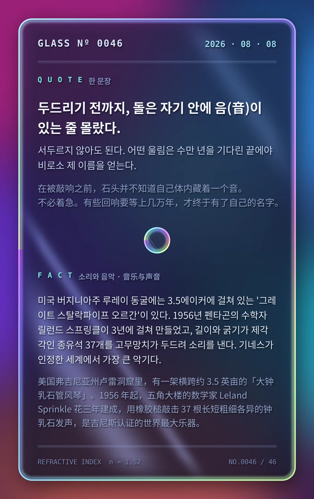

두드리기 전까지, 돌은 자기 안에 음(音)이 있는 줄 몰랐다. 서두르지 않아도 된다. 어떤 울림은 수만 년을 기다린 끝에야 비로소 제 이름을 얻는다.（在被敲响之前，石头并不知道自己体内藏着一个音。不必着急。有些回响要等上几万年，才终于有了自己的名字。）
美国弗吉尼亚州卢雷洞窟里，有一架横跨约 3.5 英亩的「大钟乳石管风琴」（Great Stalacpipe Organ）。1956 年起，五角大楼的数学家 Leland Sprinkle 花三年建成，用橡胶槌敲击 37 根长短粗细各异的钟乳石发声，是吉尼斯认证的世界最大乐器。